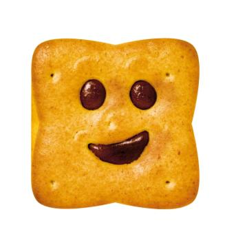

Colette & Rémy
Nous sommes une jeune startup fondée par Remy et Colette Tatou, deux restaurateurs de renom. Notre restaurant, situé à Montmartre (Paris), compte une cinquantaine de couverts et ne désemplit pas. Notre spécialité, la ratatouille, nous attire une clientèle internationale charmée par les délices de ce plat typique. Remy et Colette sont amoureux de la gastronomie française (on ne peut les blâmer !). Travaillant quotidiennement avec les meilleurs produits du terroir, ils affectionnent particulièrement la bonne chaire et aiment partager leur passion. Il est donc normal que Remy ait sauté au plafond quand Colette, un jour de déprime, sortit du placard un kilo de Nutella et l’attaqua à la petite cuillère. Pourquoi ne pas opter pour une pâte à tartiner aux noisettes, plus consistante et moins sucrée ? Pourquoi, oh pourquoi s’infliger une telle souffrance ? Rémy était sidéré. La réponse de Colette fut simple : elle n’avait pas trouvé de substitut assez convainquant. A vrai dire, elle n’avait même pas cherché.
Get Started!Colette

Rémy
Contactez-nous !
Si comme nous vous aimez le gras mais que vous ne voulez pas ressembler à Karadoc. Optez pour le moteur de recherche qui vous changera la vie!